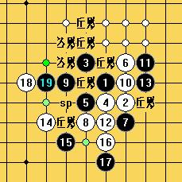
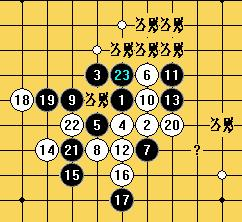
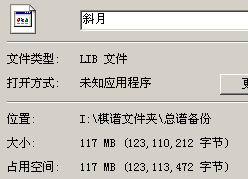
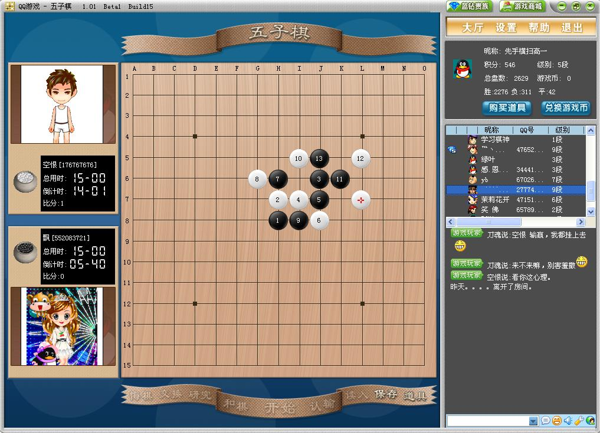
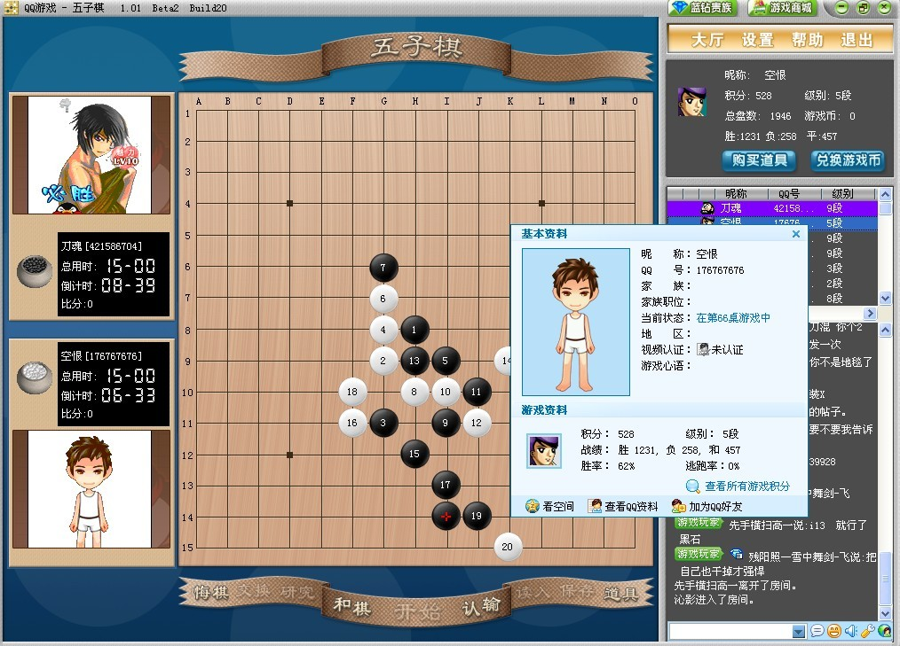

斜2 再思考
#1 斜2 再思考作者：刀魂 发表时间：2009-3-10 13:19:24
=======上图对应的爱五子棋谱代码如下，以便你拆解：========
h8i7g9h7g7i9i6g6f8i8j9h6j8e6f5h5h4
======================================================
这个黑17很有意思，一直想走出个白18最强防守出来
一下是我自认为最强的白18
=======上图对应的爱五子棋谱代码如下，以便你拆解：========
h8i7g9h7g7i9i6g6f8i8j9h6j8e6f5h5h4d8
======================================================
后面黑怎么走 就不得而知啦，谢谢高手赐教！！！
#2 Re:斜2 再思考作者：wd1988 发表时间：2009-3-10 21:12:36
哈哈哈哈！我的最近最新研究方向就是这个17！这个18也是最常见的防点！不过之后的变化我并没有地毯，只能给你一些路线作为参考

#3 Re:斜2 再思考作者：刀魂 发表时间：2009-3-10 21:16:19
呵呵，谢谢二楼的朋友 参考，让我少做很多工作#4 Re:斜2 再思考作者：冷面孤煞 发表时间：2009-3-13 22:02:07
=======上图对应的爱五子棋谱代码如下，以便你拆解：========
h8i7g9h7g7i9i6g6f8i8j9h6j8e6f5h5h4d8f7f6d6e7c9
======================================================
 刀大师，这个19也可以下哦
刀大师，这个19也可以下哦#5 Re:斜2 再思考作者：越狱行辕 发表时间：2009-3-13 23:43:59
这18你研究的？看过日本名人赛的老谱没？
#6 Re:斜2 再思考作者：刀魂 发表时间：2009-3-14 8:21:33
恩？？？ 没看过，反正我觉得这个白18防守特别强悍，，，#7 Re:斜2 再思考作者：游戏人间 发表时间：2009-3-14 10:23:52
2楼发的图根本是胡子帮内部斜月谱的截图。怎么变你的研究了。做人别这样。很不好
而且胡子帮内部斜月本就是一个杂乱的简谱。还是自己深入研究后再说吧。
#8 Re:斜2 再思考作者：wd1988 发表时间：2009-3-14 11:53:12
楼上，那副图确实是某所谓的内部研究，但是，我说的是：“目前我正在研究的就是这个17”，可没说那副图全部是我打出来的。参考别人的意见有什么不对么？再说我也没有把谱放出来呀，发个图也错了？不负责任的事我从来不会做的，那个谱确实是“杂乱无章的简谱”，但经过本人的深入研究，我现在的斜月可不是什么简谱了。上面的图仅仅作为参考。
#9 Re:斜2 再思考作者：游戏人间 发表时间：2009-3-14 18:55:04
发出来好歹说下是胡子帮内部斜月棋谱的截图的好。毕竟你现在的研究是建立在这个简谱的基础上的。我又看了下2楼。实在看不到哪提了是别人的研究。
#10 Re:斜2 再思考作者：南姑钉子户 发表时间：2009-3-14 19:24:00
啥玩意啊 下得黑一点机会也没有 会不会下斜月2打啊 懂不懂黑有哪些有效子粒啊
#11 Re:斜2 再思考作者：刀魂 发表时间：2009-3-14 19:49:40
看样子 10楼的 是一个比较猛点的人吧，要不 你给个好普看看，看看 黑怎么走才能杀。。。#12 Re:斜2 再思考作者：wd1988 发表时间：2009-3-14 21:23:26
游戏人间，这谱我刚发了个截图你就这么激动了？改明儿我自己打一遍把谱都摆上来
#13 Re:斜2 再思考作者：刀魂 发表时间：2009-3-14 21:30:44
12 楼的 还等什么呢？？？ 期待 ing！！！［本站用户 二十七刀 于 2009-3-18 17:05:49 花15个金币砸了你1个臭鸡蛋]
#14 Re:斜2 再思考作者：wd1988 发表时间：2009-3-14 21:35:09
那很多人会崩溃的。。。。斜月二打的变化目前还属于实战呢。。。涉及国家机密问题。你没看见我刚发个图就有人恼火了。。。#15 Re:斜2 再思考作者：刀魂 发表时间：2009-3-14 21:56:50
晕死，这 TMD 还国家 机密啊，没那么 严重吧！！！［本站用户 闫荣辉 于 2009-3-19 13:27:43 花15个金币砸了你1个臭鸡蛋]
#16 Re:斜2 再思考作者：游戏人间 发表时间：2009-3-14 22:30:11
唉说到底还没明白我再说什么。这个斜月谱N多人都有了。想发你就发。我又不是胡子帮里的。但是发的时候拜托注明是他们的研究。这是一种尊重懂不懂？？？？？？？
#17 Re:斜2 再思考作者：游戏人间 发表时间：2009-3-14 22:33:27
棋是有文化的。谁也不想自己的研究被别人看到了随便改改当自己的发出去。我前面看2楼那么说话就提出了问题。想不到会这么激动。人要被尊重要先懂得尊重别人。以前有过一个这样的人。叫什么天涯独行客的。希望WD1988不会成为第二个天涯独行客［ 有志青年 于 2009-3-15 8:33:31 时奖励此帖[金币加 20 威望加1］
#18 Re:斜2 再思考作者：刀魂 发表时间：2009-3-15 1:35:45
胡子帮的 斜月谱 N 多人有，，，不可能把 ，我杂就没有捏，希望17楼的 发上来。。。孩子别怕，没什么大不了的。。。。。。
不就是，，，嗨，我啥也不说了，看你的表现啦
#19 Re:斜2 再思考作者：wd1988 发表时间：2009-3-15 8:31:09
天涯独行客是我最敬仰的人，他的终结谱是最精细的。至于他可能剽窃，抄袭，盗用。。。我一概不了解，我只知道他给我谱，人很好，性格也很温和，是初级研究者的好导师，这就够了。至于七段八段的大师，因为距离我太遥远，有时候在我研究中起的作用也不是很大，反而觉得不如水平低一点的人亲近［本站用户 失落刀 于 2009-3-16 20:39:11 花5个金币送您鲜花一朵］
［本站用户 二十七刀 于 2009-3-18 17:04:25 花5个金币送您鲜花一朵］
［本站用户 gerbo 于 2009-3-19 10:32:36 花5个金币送您鲜花一朵］
#20 Re:斜2 再思考作者：刀魂 发表时间：2009-3-15 10:55:28
呵呵，顶19楼的，有谱发出来大家研究研究，又会怎么样呢，至于盗用 侵权，是不是有点夸张了呢，摆正心态就好啦，本身论坛就是给
我们 一个互相探讨的小天地，此处不发何处发。。。
［本站用户 二十七刀 于 2009-3-18 17:05:17 花15个金币砸了你1个臭鸡蛋]
#21 Re:Re:斜2 再思考作者：yoda 发表时间：2009-3-15 21:21:01
引用：别人的谱未经同意擅自传播说轻点是不尊重，说重点是不道德没棋品。这点常识都没有能搞出什么名堂？你这样的心态正常吗？爱五子棋论坛对这方面也应该树立好榜样，不要成为盗用侵权之地，更不能助长这种风气。
原文由 刀魂 发表于 2009-3-15 10:55:28 :呵呵，顶19楼的，有谱发出来大家研究研究，又会怎么样呢，至于盗用 侵权，是不是有点夸张了呢，摆正心态就好啦，本身论坛就是给
我们 一个互相探讨的小天地，此处不发何处发。。。
［ 有志青年 于 2009-3-15 21:24:35 时奖励此帖[金币加 20 威望加1］
［本站用户 二十七刀 于 2009-3-18 17:07:07 花5个金币送您鲜花一朵］
［ 行云流水 于 2009-3-18 22:46:22 时奖励此帖[金币加 20 威望加1］
［本站用户 岳麓小棋后 于 2009-3-19 19:44:13 花5个金币送您鲜花一朵］
#22 Re:斜2 再思考作者：千羽鹤 发表时间：2009-3-15 21:33:53
呵呵，如果经过本人同意的话，这个谱我也很想见识一下，不过如果本人不同意还是不要了#23 Re:斜2 再思考作者：wd1988 发表时间：2009-3-16 9:13:02
原谱1.44M，我研究之后的117M,他们给一个点，我给出地毯，这叫抄袭？什么叫剽窃？什么叫抄袭？你以公式来做奥赛题，到底算你是做的，还是公式作者做的？这也能叫抄袭？这也能叫剽窃？
你们做题引用牛顿定律的时候，每次注明了这是牛顿的公式？还有，你们用定式研究的时候，什么时候注明过这是日本XXX研究出来的定式了？花月地毯是谁第一个做的？谁发花月地毯的时候说明了？浦月地毯谁第一个做的呢？谁注明了？
你们也许说，这是内部研究！那五珠定石也是内部研究，人家怎么这么高尚了？要是定式从来不公布，中国棋手还在抓瞎呢！再说，这个谱“N多人手里都有”，N多人都有的东西还叫秘密了？我手里的简谱一大堆，每次强点就给一个提示，后续变化是一片空白，我辛苦打出了地毯，难道也得给那个给出一个点的喊师傅？我感谢这些给出提示的人，但要是要我给出更多实质报答，给个版权费，对不起，我没这个闲工夫。
［本站用户 gerbo 于 2009-3-19 10:35:35 花5个金币送您鲜花一朵］
#24 Re:斜2 再思考作者：yoda 发表时间：2009-3-16 11:39:24
不用这么激动吧。现在只要知道结论加以证明是没问题的，没那一个点你自己能地毯才算本事。都说了，有些谱是未经原制作者同意流传出去的，对待这样的谱，就算流到你手上你也不能随便拿出来截个图吧？不知道的还以为是你做的。至于吴镝说的那个谱是否已公开不不知道，这里只是就事论事。地毯的大小和价值与否不是正比好不好？那些动辄上百M上G的百分之九十九都是无用的废招，只是浪费存储空间而已。
另外，建议你多看些连珠的发展史。五珠定式最早连载于日本的期刊《连珠世界》，后经集结出书。花浦月甚至云月一打必胜都非一人完成，五珠定式中某些变化竹内博明还注明是某某棋手的研究，你要是多看看日本的《连珠世界》就会发现，某些变化往往会冠以某棋手发现或者研究的说明。这是对棋手起码的尊重，怎么到你这变成了“闲工夫”？
你打地毯辛苦，就没想过你之前那些人做谱就不辛苦？没连珠终结者之前也有地毯谱，你能想象吗？？？
中国五子棋发展到现在还是你第一次提出“版权费”，看来五子棋商业化开端由你开启。历史的车轮会记住你这颗螺丝钉的。
［本站用户 闫荣辉 于 2009-3-19 13:29:55 花5个金币送您鲜花一朵］
#25 Re:斜2 再思考作者：刀魂 发表时间：2009-3-16 11:43:00
24楼的 消消火气，至于那么认真吗，大家都是相互学习的，要抱着互相提高的心态，估计就没有那么多事情了。。。#26 Re:斜2 再思考作者：wd1988 发表时间：2009-3-16 12:21:50
抛弃掉一点小家子气，那才没什么事情呢#27 Re:斜2 再思考作者：刀魂 发表时间：2009-3-16 12:29:13
支持26楼的 朋友，，，#28 Re:斜2 再思考作者：wd1988 发表时间：2009-3-16 12:31:46
“一个点也没有还能地毯就算你本事”，这句话我非常赞同！但是现在是什么社会？是信息社会！你要是不学小学初中高中，就能知道牛顿定律，知道勾股定理，还会做题，那当然算你本事！但是这样的本事值得赞同么？这是走弯路，是社会的倒退！你试试不上高中大学，自己发明微积分，我也说“你很有本事”！但是这样有本事的人多么？不多吧？大部分人还是要先学基础吧？简谱给一个点，就等于是给了公式一样，你能全盘否定我之后的工作？
花月必胜这个说法早就存在，后来“很多人合作完成”，那么你引用花月地毯的时候是否把这些人的名字全部说出来了呢？我们学的定式都是五珠定石出来的，那岂不是每一次摆棋，摆到定式手就要说明这是日本人的功劳？
其实说到底，就是一小厥人心里的阴影在作怪，巴不得自己有了谱就可以了，别人都没有就好。宗师斜月和朵朵斜月不知道多少人有，都不传出来，号称是“保护作者利益”，说白了就是极度的自私心理在作怪，就怕别人也有比自己强。如果反对者可以拍着胸膛发誓：“我绝对绝对没有一丁点自私心理，完完全全就是为了保护知识产权，保护作者利益，我是最高尚的人！如果不是如此，我终生不配下五子棋，不配做人！”那我鼓掌，以后我绝对不再发任何一个谱，不再涉及任何研究，不再推广任何局面，就自己躲起来砍人！
#29 Re:斜2 再思考作者：游戏人间 发表时间：2009-3-16 13:07:22
=======上图对应的爱五子棋谱代码如下，以便你拆解：========
h8h9h7h6i8g8f7i7g6f5j8
======================================================
这个叫九州流
=======上图对应的爱五子棋谱代码如下，以便你拆解：========
h8h9h6i10i6i9g9g8j11i7i11
======================================================
这个最早在日文五手两打总论里好像叫什么青山流之类的
=======上图对应的爱五子棋谱代码如下，以便你拆解：========
h8i9g7h9i8j8j9h7h10f8k10
======================================================
这个好像最早叫早川流
楼上明白是什么意思吗？原来怕你成天涯独行客，现在看你和他真的没什么区别了。
#30 Re:斜2 再思考作者：游戏人间 发表时间：2009-3-16 13:09:37
你们做题引用牛顿定律的时候，每次注明了这是牛顿的公式？还有，你们用定式研究的时候，什么时候注明过这是日本XXX研究出来的定式了？花月地毯是谁第一个做的？谁发花月地毯的时候说明了？浦月地毯谁第一个做的呢？谁注明了？
你也知道这个叫牛顿公式了。。。那就已经说明提到公式的作者了
#31 Re:斜2 再思考作者：游戏人间 发表时间：2009-3-16 13:16:24
说那么多估计你都没明白我的意思。。只是想让你在截图的时候如果有标注是谁的棋谱最好写个注解。而 不是随便说是自己的研究。其实说点难听的，现在的五子棋真正属于你自己的研究的有吗？而那个斜月谱你不要说没标注，除非你给删除了#32 Re:斜2 再思考作者：刀魂 发表时间：2009-3-16 13:27:09
呵呵，息怒息怒。到此结束。冤冤相报何时了#33 Re:斜2 再思考作者：yoda 发表时间：2009-3-16 19:55:35
我之前就表明过态度，共享是好的但是要有所规范。不是拿了别人的谱用终结者做个地毯就变成自己研究，进而发布出来好像推动五子棋普及和发展一样。花浦月都必胜几十年了，有几个人系统学过，并且能说实战百分之百能必胜？至于像溪峡月这种开局，能做到实战必胜的那就更可想而知了。地毯对于初学者没什么用，还如不看看五手两打的基础定式来的实际。地毯是理论研究论证结果，发展到现在变成只要结果过程不计。试问，你地毯了你都会胜了？不是在爱五子棋发布才叫发布，中国五子棋圈子就这么小吗？那你那些谱那里来的？别告诉我是天涯独行客独创的。
［ 有志青年 于 2009-3-16 21:26:51 时奖励此帖[金币加 20 威望加1］
#34 Re:斜2 再思考作者：wd1988 发表时间：2009-3-16 20:28:44
是不是我可不知道了，参考谱上写着天涯制作，我就只能相信这一作者。至于又有人突然蹦出来说这里面其实是他的研究，那么请不要找我，找天涯#35 Re:斜2 再思考作者：有志青年 发表时间：2009-3-16 21:28:17
怯怯的插一句话，从不少渠道听到关于天涯的负面评论。
#36 Re:斜2 再思考作者：游戏人间 发表时间：2009-3-16 22:17:18
楼上的。天涯就是一个成天剽窃别人变化的败类，这在五子棋圈子里早就是共识了。而且偷窃完把A1之类的点也做上搞成几百M的大谱让后美其名曰他自己的研究。据说还花钱买了个5段的段位。大概自我感觉特别良好还打过慢棋赛，赛前还发布狂言要夺冠，让后让人打到降组的人。。。我想这些足以说明是个什么样的人了吧。
#37 Re:斜2 再思考作者：游戏人间 发表时间：2009-3-16 22:20:52
再次重申下。这里没人阻止你发谱，也没人藏着变化之类的。WD1988你不用在那装可怜喊冤。我前面的帖子说的很明白。你发别人的变化也没人说你啥。但是最起码的尊重懂吗？用的什么谱截图的好歹说下。别把别人的棋谱拿来截个图就美其名曰你的研究了。那你的行为和天涯独行客有什么区别？#38 Re:斜2 再思考作者：星夜无云 发表时间：2009-3-16 22:30:40
其实开始地毯的时候大家都是以交流为主，当时没有人能够单独的地毯任何一个开局，所以不能说一个地毯谱是完全由哪个人独立研究出来的，版权归属更是说不清了。到后来大家研究交流的差不多了，某些人可以在大家的研究基础上独立的终结某一个开局，这时候一些人就有了版权意识，开始有人在谱里署上自己的名字，我认为版权的归属应该从第一个署名算起，后面研究的再加上自己的名字。至于修改前人标注的，这是一个人品问题，是让人相当无奈的。关于天涯这个人不好说，我觉得用普罗米修斯来形容他是最适当的。［本站用户 刀魂 于 2009-3-16 22:43:06 花5个金币送您鲜花一朵］
#39 Re:斜2 再思考作者：wd1988 发表时间：2009-3-17 10:40:13
楼上的楼上，你理解真有毛病，我几时说这是我的研究了？我说了：“下图是我的研究”么？你看不明白，只好再说一次我那句话怎么说出口的：“我也正好在研究这个17，这个18是最强防。之后的路线如下图”我可没说如下图就是我的研究了，只不过我自己也不知道是胡子帮的那个谱，我向来是拿了谱直接合并的，就跟我解答别人的问题，顺便翻一下书，然后把书上的图截下来发过去而已。我要弄成自己的研究还不容易？把那些“近败”换了，换成L不就可以了？只不过我懒得。
我只说“我正好也在研究这个17”，不对么？难道别人打了个谱，我就不能研究这个17了？上的图只不过是我从总谱中截的，里面不知道有多少个谱合并而成的，我咋知道这幅图偏偏就是胡子帮的？我这么倒霉，也就认了。不说啥了。胡子帮要追究责任，也只能找那个第一个漏谱的人，就跟一个小偷偷了自行车一样，转手卖了五六遍，最后一个人拿着，根本不知道这自行车是偷来的，你难道不追究小偷的责任，要追究最后那个人的责任？
说白了，你不说这图是胡子帮的研究之前，我压根不知道这是胡子帮的，因为这个局面没有标记，说是他们的，我又怎么可能知道？
#40 Re:斜2 再思考作者：刀魂 发表时间：2009-3-17 13:28:17
 呵呵，其实每个人的研究都是建立在前人的基础上的，不用在乎那些的。。。
呵呵，其实每个人的研究都是建立在前人的基础上的，不用在乎那些的。。。［ gerbo 于 2009-6-9 11:51:35 时花20金币送鲜花一朵］
#41 Re:斜2 再思考作者：无聊 发表时间：2009-3-17 13:51:52
无论如何版权要清晰（尽管五子棋圈这个没有法律限制，只能靠自觉和别人监督了），你发的图不作说明别人很自然就认为是你做的，你不知道是谁做的也情有可原；游戏人间也的确是过于敏感了，抓住了这个漏洞。
还有帖子标题是再思考，可里面根本没有内容，那个18最强早有定论。最近论坛多了不少靠标题哗众取宠的人。
［本站用户 二十七刀 于 2009-3-18 17:24:55 花15个金币砸了你1个臭鸡蛋]
［本站用户 有志青年 于 2009-3-18 20:54:03 花5个金币送您鲜花一朵］
#42 Re:斜2 再思考作者：wd1988 发表时间：2009-3-18 12:21:43
楼上说得很中肯#43 Re:斜2 再思考作者：刀魂 发表时间：2009-3-18 14:40:26
 41楼的 啥子意思啊，别人知道不等于 偶知道啊，要照顾菜鸟的情绪啊。。。
41楼的 啥子意思啊，别人知道不等于 偶知道啊，要照顾菜鸟的情绪啊。。。#44 Re:斜2 再思考作者：二十七刀 发表时间：2009-3-18 17:24:23
wd1988人很好的，各位照顾一下这位喜欢发谱的兄弟，天涯也是我的铁哥们，
吴镝你是很多人的偶像，我也是你的粉丝；不过用词要注意点．
［本站用户 闫荣辉 于 2009-3-19 13:32:09 花5个金币送您鲜花一朵］
#45 Re:斜2 再思考作者：刀魂 发表时间：2009-3-18 17:45:44
怎么 我 发个帖子 杂就 搞得那么多人不愉快呢。。。。
#46 Re:斜2 再思考作者：二十七刀 发表时间：2009-3-18 17:53:39
不怪你；有人的地方就有江湖,有江湖有就恩怨。#47 Re:斜2 再思考作者：游戏人间 发表时间：2009-3-18 18:02:32
没觉得我哪里用词出问题了。难道公然截别人棋谱的图暗示是自己的就是对的？真奇怪了。。。还有那个斜月棋谱里肯定有胡子帮的标注的。如果没有只能是某人故意给删除掉了。人啊不能无耻到这个地步的。#48 Re:斜2 再思考作者：刀魂 发表时间：2009-3-18 18:20:26
有人的地方 就有江湖，有江湖就有恩怨，有恩怨就有杀戮，啥子意思啊。。。
胡景涛主席 不是早提倡和谐社会了嘛 真是的。。。
再说了，我这个帖子 又不是 主战场。。。
#49 Re:斜2 再思考作者：wd1988 发表时间：2009-3-18 19:03:05
给谁删掉了也不是我删掉的，我又没虚荣病。这个谱开头可能有注明，但是下了这么多手下到这个分支里面，我咋知道是谁得了，都说了是N个谱合并了。我这个谱一开头说的话，每次都不一样，因为多个谱的开头叠在一起了，这次是A，下次就是B了#50 Re:斜2 再思考作者：yoda 发表时间：2009-3-18 19:18:40
刚才看了下胡子帮的斜月内部谱，里面还有我六七年前某个分支研究的标记。呵呵#51 Re:斜2 再思考作者：yoda 发表时间：2009-3-18 19:21:20
多看了几眼，应该是合并了我六七年前的斜月谱库。#52 Re:斜2 再思考作者：刀魂 发表时间：2009-3-18 19:22:26
大家别吵来吵去啦，本来棋谱就是大家共同完成的结果，很多棋谱的改进都是建立在前人的基础之上完成的，至于在乎是你的我的嘛，有了进步
才是大家想看到的结果哦。
#53 Re:Re:斜2 再思考作者：yoda 发表时间：2009-3-18 19:39:50
引用：问题是我的谱库给人的时候都说是仅供个人参考，结果我自己都不知道被合并到别人的谱里面去了，连标注都没改。其实这东西早就过时了，有些结论是对是错只有做谱的人知道。如果只知道合并不加以验证，那这种谱流传出去是不严谨的也是不负责任的。当然，各人有各人的态度，道不同不相为谋。
原文由 刀魂 发表于 2009-3-18 19:22:26 :大家别吵来吵去啦，本来棋谱就是大家共同完成的结果，很多棋谱的改进都是建立在前人的基础之上完成的，至于在乎是你的我的嘛，有了进步
才是大家想看到的结果哦。
#54 Re:Re:Re:斜2 再思考作者：刀魂 发表时间：2009-3-18 19:55:03
引用 yoda：
问题是我的谱库给人的时候都说是仅供个人参考，结果我自己都不知道被合并到别人的谱里面去了，连标注都没改。其实这东西早就过时了，有些结论是对是错只有做谱的人知道。如果只知道合并不加以验证，那这种谱流传出去是不严谨的也是不负责任的。当然，各人有各人的态度，道不同不相为谋。
我把谱发出来不外乎这几个目的：第一，大家共同学习，参考，第二，棋谱有错误的地方能得到高手指正哦。
#55 Re:斜2 再思考作者：聂淼 发表时间：2009-3-18 20:23:51
参照五子棋对局面的命名历史和规则，和其他棋种的习惯，对一个局面的命名一般是以一个伟大棋手在一个伟大比赛中击败了同样伟大的敌人，从而得以命名的，不以研究和所谓地毯来命名，或者说成谁的研究吧．现在网络这么发达，每天产生上万盘对局，全世界每天保守估计有至少１００个无聊的人在研究和终结五子棋，只是有的低调，有的高调，有的没真正地毯就出来地毯了，有的真正地毯了却躲起来装着不知道，所以说很来确定谁比谁先研究出来，关键是所有研究成果不通过在实战中予以展示，也不会得到承认．
=======上图对应的爱五子棋谱代码如下，以便你拆解：========
h8h9h7h6i8g8f7i7g6f5j8
======================================================
比如九州流，你能保证在九州的连珠家展示这种下法之前，没有其他爱好者下过？我觉得这么简单的挡二自己成绵三是最容易想到的嘛，所以命名规则一般都以实战那个著名高手下出为准，其他棋种，尤其国际象棋通常如此．还有令四川引以为毫的风尘流，那也是风尘在全国团体赛上击败了一个同样水平较高的棋手，而得以受到国内大多数人的接受，承认为风尘流的．但因为风尘毕竟是在中国的比赛，所以也只在中国承认，如果吴嫡拿到世界赛上用这个战胜了ＡＮＤＯ或者俄罗斯某个著名高手，那世界上就只会承认这是无敌流了，而不会说是风尘流了，竞技体育基本就是这样的，需要很多无名英雄．
［本站用户 有志青年 于 2009-3-18 20:57:02 花5个金币送您鲜花一朵］
［本站用户 二十七刀 于 2009-3-18 21:59:32 花5个金币送您鲜花一朵］
#56 Re:斜2 再思考作者：刀魂 发表时间：2009-3-18 20:35:23
55楼的 说的太对了，攒一个#57 Re:斜2 再思考作者：yoda 发表时间：2009-3-18 21:13:14
“九州流”不是九州地方的某棋手使用出来而命名的，并且“九州流”也非单指松月这一型，这点请考证。#58 Re:斜2 再思考作者：yoda 发表时间：2009-3-18 21:34:58
参照五子棋对局面的命名历史和规则，和其他棋种的习惯，对一个局面的命名一般是以一个伟大棋手在一个伟大比赛中击败了同样伟大的敌人，从而得以命名的，不以研究和所谓地毯来命名，或者说成谁的研究吧．
下图26是很有名的流星定式，1982年2月21日 中村茂九段执白靠这步妙手赢了西山厚名人。按照楼上的理论这步妙手应该归到中村茂名下，但日本棋界都知道这步棋是藏田清隆八段（已故）最先发现的，这些都有公开的资料可查。
=======上图对应的爱五子棋谱代码如下，以便你拆解：========
h8i9j6g9j8h9j9j7i8g8i5k7k8l8i10l7i7m7n7k9j10l6l5k5j4o11
======================================================
#59 Re:斜2 再思考作者：刀魂 发表时间：2009-3-18 21:38:51
55楼的人家 可是 职业棋手哦，所以请58楼的还是，别太计较哦。他敢这么说，就说明他比较了解了的哦。
#60 Re:斜2 再思考作者：yoda 发表时间：2009-3-18 21:42:18
再举一例，秀哉和吴清源都够伟大了吧。
1933年10月，吴清源和本因坊秀哉名人进行对局，期间棋局至159手，都是秀哉苦战，但他160手下出了一个妙手，至252手结束，最后秀哉2目半胜。这160手的妙招，是秀哉名人的弟子前田陈尔五段发现的。
1948年，吴清源的老师濑越宪作在一次记者招待会上对新闻记者讲了当年160手的故事，他说：“第160手是秀哉的弟子前田陈尔发现并支招的。”此事见报后，引起了本因坊一门的极度愤慨，并为此向濑越声讨。当时，濑越是日本棋院理事长，因为此事，他不得不辞去了理事长的职务。
#61 Re:斜2 再思考作者：yoda 发表时间：2009-3-18 21:44:59
就事论事和职业、业余有什么关系？要是这样比，我做职业棋手那会，应该比55楼早。
#62 Re:斜2 再思考作者：刀魂 发表时间：2009-3-18 21:48:00
啊？？？？？？？？？？？？？？
61楼的，你也是职业棋手，，，，别吓人哟，，，
可否透入下。。。
#63 Re:斜2 再思考作者：yoda 发表时间：2009-3-18 21:51:46
我说曾经是职业，现在是业余爱好。鄙人名叫李洪斌。［ 有志青年 于 2009-3-18 22:03:14 时奖励此帖[金币加 20 威望加1］
李老师藏得好深哟，不说真不知道，呵呵，没有其他好东西，威望送一个。
［ 失落刀 于 2009-3-18 22:09:41 时奖励此帖[金币加 20 威望加1］
大师出场，列队仰望。
［ 逆刃 于 2009-3-18 22:13:31 时奖励此帖[金币加 20 威望加1］
［ 无尽 于 2009-3-18 22:22:17 时奖励此帖[金币加 20 威望加1］
［ 雨一直下 于 2009-3-18 23:09:13 时奖励此帖[金币加 20 威望加1］
［ 潇洒 于 2009-3-18 23:44:42 时奖励此帖[金币加 20 威望加1］
［本站用户 wrwak 于 2009-3-19 8:53:40 花5个金币送您鲜花一朵］
［本站用户 gerbo 于 2009-3-19 10:44:44 花5个金币送您鲜花一朵］
［本站用户 闫荣辉 于 2009-3-19 13:34:59 花5个金币送您鲜花一朵］
［本站用户 百医天使 于 2009-3-20 23:02:14 花5个金币送您鲜花一朵］
［ lfzxdh 于 2009-4-23 19:45:27 时花20金币送鲜花一朵］
#64 Re:斜2 再思考作者：刀魂 发表时间：2009-3-18 22:08:18
哈哈，63楼的，幸会幸会，你的头像好可爱哟，，，哈哈，套出一位猛将出来，有志大哥咋不给我奖励捏，没有我的功劳您能知道他是
李洪斌 ？
#65 Re:斜2 再思考作者：nara 发表时间：2009-3-18 22:10:48
一直觉得yoda挺强的,没想到是李老师啊!哈哈!
#66 Re:斜2 再思考作者：刀魂 发表时间：2009-3-18 22:47:05
为什么 为什么 ，，，不给我来一个 威望哦，可是我 逮到 李洪斌 老师的啊。。。(至少 鲜花送
上吧)
#67 Re:斜2 再思考作者：行云流水 发表时间：2009-3-18 22:53:47
别人的谱未经同意擅自传播说轻点是不尊重，说重点是不道德没棋品。这点常识都没有能搞出什么名堂？你这样的心态正常吗？爱五子棋论坛对这方面也应该树立好榜样，不要成为盗用侵权之地，更不能助长这种风气。
非常同意这段话。
有人说给出一个点和做出地毯，不算抄袭。大凡研究者都会有这样一个感觉，有时往往一个变化的穷尽或终结，关键就在一个点上，有了这个突破口，用软件终结一下不是一件难事，可是难就难在要想到那个关键点并非朝夕可以做到。如果基于利用这样的一个提示点完成了地毯终结，不晓得这个变化的功劳该算在谁的身上！
是不是某人获得了可口可乐的神秘配方，然后这个人就可以“无私”的把依此制成的饮料称为个人的能力呢!
#68 Re:斜2 再思考作者：四川连珠魂 发表时间：2009-3-18 22:54:30
这个17的变化我记得棋情2年前就开始研究了，发谱的时候注明原作者是对研究者的尊重和肯定
#69 Re:斜2 再思考作者：行云流水 发表时间：2009-3-18 22:59:35
五珠定式最早连载于日本的期刊《连珠世界》，后经集结出书。花浦月甚至云月一打必胜都非一人完成，五珠定式中某些变化竹内博明还注明是某某棋手的研究，你要是多看看日本的《连珠世界》就会发现，某些变化往往会冠以某棋手发现或者研究的说明。这是对棋手起码的尊重，怎么到你这变成了“闲工夫”？
鉴于有人提到了日本棋手的无私问题，所以很推荐大家认真看看YADO写的这段话。推广普及是需要大家一起做，但是起码的棋德要懂得。前人的研究是可以借鉴，但是不能说借鉴了然后做成自己的谱就一点别人的事都没有了，起码应该说明或注明一下，这是做人最起码的礼貌。此外，关于五子棋研究的历史，如果没有深入了解，也请少误导大家。在日本，五子棋的技术研究最初也是各人的机密，光花月浦月的必胜变化，最早的时候日本就有不同的流派和不同的研究，大家都是作为秘密武器的。后来逐渐提升一个层面了，这些也就成为可以公开和普及的资料了。
#70 Re:斜2 再思考作者：行云流水 发表时间：2009-3-18 23:03:14
就跟一个小偷偷了自行车一样，转手卖了五六遍，最后一个人拿着，根本不知道这自行车是偷来的，你难道不追究小偷的责任，要追究最后那个人的责任？
解释一下，法律中对于这样的情况仍然是自行车作为赃物没收，还给失主（如果能找到的话）。不处分最后那个人的前提，是这个人能充分证明自己确实是无辜的，根本不知道是赃物。
#71 Re:斜2 再思考作者：行云流水 发表时间：2009-3-18 23:07:39
我觉得这么简单的挡二自己成绵三是最容易想到的嘛。
九州流不是简单的因为九州的棋手喜欢下这手棋就这么命名的，而是一个有系统的变化。请不要在不了解的情况下，就随意的用自我理解的方式给专用名词作不正确的解释！
#72 Re:斜2 再思考作者：刀魂 发表时间：2009-3-19 7:50:35
哈哈，71楼的朋友 看样子是职业的，敢问阁下是。。。？#73 Re:斜2 再思考作者：潇洒 发表时间：2009-3-19 8:04:46
71楼是顾炜老师 上海职业7段#74 Re:斜2 再思考作者：刀魂 发表时间：2009-3-19 8:06:04
哈哈，原来是 古大师啊。。。佩服哦。。。#75 Re:斜2 再思考作者：gerbo 发表时间：2009-3-19 10:47:39
南李北张,让人回忆的年代..#76 Re:斜2 再思考作者：刀魂 发表时间：2009-3-19 11:41:05
gerbo 敢问你是 哪位 大师呢？？？#77 Re:斜2 再思考作者：星夜无云 发表时间：2009-3-19 16:20:03
浮夸风该刹一刹了#78 Re:斜2 再思考作者：刀魂 发表时间：2009-3-19 16:38:09
顶一个#79 Re:斜2 再思考作者：厦门小天 发表时间：2009-3-19 16:44:01
新人做事总比较没分寸，况且搞研究棋多少因为点虚荣心，暗示改正就好了吧。现在新人也确实过于气盛，当有点自律才是。#80 Re:斜2 再思考作者：刀魂 发表时间：2009-3-19 16:55:40
晕s、、、、
#81 Re:斜2 再思考作者：闫荣辉 发表时间：2009-3-19 22:56:44
好像都跑题太远了额！
#82 Re:斜2 再思考作者：刀魂 发表时间：2009-3-20 8:20:28
呵呵，我说的再 思考。。。不知道 他们为何掐起来。。。晕s#83 Re:斜2 再思考作者：老黄 发表时间：2009-3-20 22:17:01
李大师，顾大师。吴大师。基本上算是三代大师同堂了。不容易啊。
#84 Re:斜2 再思考作者：刀魂 发表时间：2009-3-20 22:54:09
哈哈，不会是 三位大师 打起来了吧。。。#85 Re:斜2 再思考作者：自来水 发表时间：2009-3-21 9:18:21
好混乱……讨论那么激烈，居然盯着个版权咬文嚼字。
最后变成“大师欢迎会了”……
#86 Re:斜2 再思考作者：刀魂 发表时间：2009-3-21 9:33:16
哈哈。。。看样子大师们 都很有自己的个性啊。。。#87 Re:斜2 再思考作者：刀魂 发表时间：2009-4-10 20:47:34

#88 Re:斜2 再思考作者：忧郁的双眼 发表时间：2009-4-11 0:51:08
一个18 一个19
这个贴子研究的目的何在?
第一页的截图确实是胡子内部斜月简谱
=======上图对应的爱五子棋谱代码如下，以便你拆解：========
h8i9g7h9g9i7i10g10f8i8j7h10j8e10f11h11h12d8e8
======================================================
最强手顺.
#89 Re:斜2 再思考作者：忧郁的双眼 发表时间：2009-4-11 0:54:47
还有 原来尤达大师就是李老师哦
崇拜下~一直从尤达的贴子中觉得他是个强大的人
没想到....
#90 Re:斜2 再思考作者：卖身打胎 发表时间：2009-4-11 1:03:42
这个17不好 有背于斜月2打的下法 关于发的什么内部谱我没看过 近败什么意思 黑乱攻一气之后杀不出来黑近败？我想可能就是这意思
#91 Re:斜2 再思考作者：忧郁的双眼 发表时间：2009-4-11 1:09:07
近败是对白来说哦
就是说白下那几个地方理论上黑胜
#92 Re:斜2 再思考作者：卖身打胎 发表时间：2009-4-11 1:14:52
5连才叫胜 理论上胜什么意思 对家突然死于非命吗
#93 Re:斜2 再思考作者：忧郁的双眼 发表时间：2009-4-11 1:19:03
那你说对于斜一打的权威评价 是不是黑理论胜?#94 Re:斜2 再思考作者：卖身打胎 发表时间：2009-4-11 1:23:00
这我不知道 我只知道理论胜这词毫无意思#95 Re:斜2 再思考作者：刀魂 发表时间：2009-4-11 9:56:45
#96 Re:斜2 再思考作者：wd1988 发表时间：2009-4-11 15:15:35
内部谱。。。我都有了还叫什么内部谱。据说这些变化都是六年以前的了，这样的东西还藏着掖着，怕别人知道，可悲。。。
要说他有价值，他们自己都说是很久很久以前的老东西了；要说没价值，我一发就激动成球了。。。
不懂人性
#97 Re:斜2 再思考作者：刀魂 发表时间：2009-4-11 15:34:48
哈哈，嘻嘻哈哈，分析的慢有道理的，不过你以后要是发谱，最好注明一下子哦。。。这样别人就不会误会你啦。。。毕竟是别人研究
的（涉及到版权问题，还有面子问题哦。。。）
#98 Re:斜2 再思考作者：就是爱玩 发表时间：2009-4-11 22:55:14
97楼用词幽默诙谐
#99 Re:斜2 再思考作者：wrwak 发表时间：2009-4-13 9:21:55
=======上图对应的爱五子棋谱代码如下，以便你拆解：========
h8i7g9h7g7i9i6g6f8i8j9h6j8e6f5h5h4e7
======================================================
这样呢
#100 Re:斜2 再思考作者：wd1988 发表时间：2009-4-13 18:24:35
楼上变化属于次强，也很不错。但是黑仍然很优，必胜我当然是不敢说的，但是黑比老定式更加容易控制。
我下这个17觉得得心应手，并没有觉得什么“有背于斜月2打的下法”，因为谁也没说老下法就是好的，老下法好难杀倒是真的。
#101 Re:斜2 再思考作者：刀魂 发表时间：2009-4-23 8:32:22
这个黑17，个人觉得黑棋不要轻易进攻，到了中盘优势会越来越大。。。
#102 Re:斜2 再思考作者：刀魂 发表时间：2009-4-23 9:04:45
，有人敢说 这个17 黑棋终结了吗？#103 Re:斜2 再思考作者：restry 发表时间：2009-4-29 8:32:10
和有些人不能讲道理的，有些人会强词夺理，他反驳你的话甚至会让你很生气 觉得太不可理遇了！老是和你歪辩
其实假如把双方的位置颠倒下，你说出他的那套说辞，他也会强烈的反驳你
就是一句话：这类人不是为了辨理而辩 就是为了卑鄙的争输赢
在这个论坛里 上次看到李睿凡以这样的嘴脸和人争论 这次又遇到个。
#104 Re:斜2 再思考作者：忧郁的双眼 发表时间：2009-4-29 10:59:41
LRF起码当面会叫他LRF老师
楼上说的这个。。。。
不敢恭维
#105 Re:斜2 再思考作者：刀魂 发表时间：2009-4-29 12:02:31
 ，斜2 ，有人拆出地毯了吗？？？
，斜2 ，有人拆出地毯了吗？？？#106 Re:斜2 再思考作者：刀学生 发表时间：2009-4-29 12:24:00
哈哈哈哈 刀魂我有地毯哦 就是不给你看#107 Re:斜2 再思考作者：刀学生 发表时间：2009-4-29 22:38:52
建议封杀 此贴 话题围绕到混的 都要删#108 Re:斜2 再思考作者：刀魂 发表时间：2009-4-30 21:24:22
呵呵，黑棋控制 就可以啦#109 Re:斜2 再思考作者：刀学生 发表时间：2009-4-30 21:36:35
刀魂把自己帖子全部顶起来了，极大的影响了版面整洁，其言论也是十分不负责的态度，建议全部封杀！
#110 Re:斜2 再思考作者：刀魂 发表时间：2009-4-30 21:41:28
，我做人这么低调，竟然还要封杀我。。。天理何存撒
#111 Re:斜2 再思考作者：非鸟 发表时间：2009-4-30 21:54:19
哇 好低调#112 Re:斜2 再思考作者：刀魂 发表时间：2009-4-30 21:55:19
ls 你也这么觉得啊。谢谢啊 （来，亲一个）
（来，亲一个）［ 岳麓小棋后 于 2009-4-30 22:02:38 时花50金币砸了你一个臭鸡蛋］
#113 Re:斜2 再思考作者：刀学生 发表时间：2009-5-1 11:38:38
挖 挖 论坛可以发什么代码莫#114 Re:斜2 再思考作者：刀魂 发表时间：2009-5-1 11:54:00
，请大家 低调 ，低调#115 Re:斜2 再思考作者：刀学生 发表时间：2009-5-1 14:05:25
刀魂你真低调，以前还说自己空恨徒弟的人现在露馅了，接着
#116 Re:斜2 再思考作者：刀学生 发表时间：2009-5-1 15:07:33
看来空恨该下课兼带留级了#117 Re:Re:斜2 再思考作者：刀魂 发表时间：2009-5-1 17:38:39
引用：
原文由 刀学生 发表于 2009-5-1 15:07:33 :
看来空恨该下课兼带留级了怎么，我砍空恨的那2局（第一局：峡月刀（刀魂执黑胜）；第二局：长星局（刀魂执白胜）），你没有截图啊。。。小样吧。。。
#118 Re:斜2 再思考作者：学生刀 发表时间：2009-5-1 17:57:48
用刀魂自己的话： 下平衡才能算赢 ，何况这个空恨的确不强
，何况这个空恨的确不强
#119 Re:斜2 再思考作者：刀魂 发表时间：2009-5-1 18:10:32
做人要 厚道撒（请用河南话朗读）#120 Re:斜2 再思考作者：刀魂 发表时间：2009-5-2 7:57:01
第一局 刀魂 vs 空恨 （峡月刀局 刀魂执黑胜）

第二局 刀魂vs 空恨 （长星局 刀魂执白胜）
=======上图对应的爱五子棋谱代码如下，以便你拆解：========
h8g7f6h6i5g9g8i8e7g5
====================================================== 哎呀 不好意思 有点忘记了，下次记得截图
#121 Re:斜2 再思考作者：学生刀 发表时间：2009-5-2 9:15:40
空恨不懂妖刀，否则8手最强应该知道#122 Re:斜2 再思考作者：快乐天羽 发表时间：2009-5-2 13:14:59
五子棋就这么个东西，每个人都存在剽窃、吹牛和标榜自己的情况存在。我只想说，大家自己都注意点，收敛点，都不要太夸张了就好了。
#123 Re:Re:斜2 再思考作者：刀魂 发表时间：2009-5-2 14:01:58
引用：
原文由 快乐天羽 发表于 2009-5-2 13:14:59 :五子棋就这么个东西，每个人都存在剽窃、吹牛和标榜自己的情况存在。我只想说，大家自己都注意点，收敛点，都不要太夸张了就好了。
剽窃 吹牛 ，标榜，我就得你说的有点过了，这东西怎么讲呢，我觉得最重要的还是付出吧。。。总之娱乐为主，不要太计较啦
#124 Re:斜2 再思考作者：刀魂 发表时间：2009-5-3 17:22:24
=======上图对应的爱五子棋谱代码如下，以便你拆解：========
h8g7i9h7i7g9g6i6j8g8f9h6i5
======================================================
这个13，蛮有意思的。。。
［ 学生刀 于 2009-5-4 12:30:18 时花50金币砸了你一个臭鸡蛋］
#125 Re:斜2 再思考作者：刀魂 发表时间：2009-5-4 12:26:58
呵呵，不知道 大家有结论了嘛？？？#126 Re:斜2 再思考作者：松痕 发表时间：2009-5-14 16:51:39
此刀魂还为自己取名空恨,哎.#127 Re:斜2 再思考作者：陨落之城 发表时间：2009-5-14 18:02:47
=======上图对应的爱五子棋谱代码如下，以便你拆解：========
h8i9g7h9g9i7i8g8h6f8e6f6f5g4d7d8e7f7e8e5f9c6
======================================================
请问这个7能杀吗？
还有这个21怎么样？有研究价值吗？
=======上图对应的爱五子棋谱代码如下，以便你拆解：========
h8i9g7h9g9i7i8g8h6f8e6f6f5g4d7e7d8f10f9c6g12
======================================================
#128 Re:斜2 再思考作者：耳痛 发表时间：2009-5-16 5:10:01
Lz:"胡子帮要追究责任，也只能找那个第一个漏谱的人，就跟一个小偷偷了自行车一样，转手卖了五六遍，最后一个人拿着，根本不知道这自行车是偷来的，你难道不追究小偷的责任，要追究最后那个人的责任？"
法律术语叫保护善意第三人.
行云流水:"解释一下，法律中对于这样的情况仍然是自行车作为赃物没收，还给失主（如果能找到的话）。不处分最后那个人的前提，是这个人能充分证明自己确实是无辜的，根本不知道是赃物。"
各个国家规定有所不同,西方海洋法系出于"物尽其用",商品交易流通的考虑是不会没收的.自行车从被辩识为赃物到归还失主手里很有可能是个长期的过程,自行车会生锈的. . .
对第三人来讲，他不可能百分百辨别确定自行车是不是赃物，对任何一个正常人来说，都不可能做到。再者说，自行车的所有权人对其物的丧失，也负有一定的主观疏忽责任，不能因为他的过错而去损害另一个善意的人。
Lz拿自行车来类比他人知识成果(或"知识性的权利"--不知道棋谱能否上升到知识产权的高度暂用这个词)似乎不妥.善意取得制度只适用动产. . .
#129 Re:斜2 再思考作者：鬃毛 发表时间：2009-5-19 22:47:27
我也DC出售 斜月2打的黑必胜。。。。价格嘛 看着给吧#130 Re:斜2 再思考作者：陨落之城 发表时间：2009-5-23 15:41:01
=======上图对应的爱五子棋谱代码如下，以便你拆解：========
h8i9g7h9g9i7i10g10f8i8j7h10j8e10f11h11h12e9e8
======================================================这个18这样防吗？
#131 Re:斜2 再思考作者：刀魂 发表时间：2009-5-27 13:21:43
=======上图对应的爱五子棋谱代码如下，以便你拆解：========
h8g7i9h7i7g9g8i8h10
====================================================== 这个黑7不错，白棋没有任何机会
=======上图对应的爱五子棋谱代码如下，以便你拆解：========
h8g7i9h7i7g9g6i6j8g8f9h6i5
====================================================== 这个13，同上
#132 Re:Re:斜2 再思考作者：黄药师 发表时间：2009-5-27 19:37:03
引用：
原文由 wd1988 发表于 2009-3-14 11:53:12 :楼上，那副图确实是某所谓的内部研究，但是，我说的是：“目前我正在研究的就是这个17”，可没说那副图全部是我打出来的。参考别人的意见有什么不对么？再说我也没有把谱放出来呀，发个图也错了？不负责任的事我从来不会做的，那个谱确实是“杂乱无章的简谱”，但经过本人的深入研究，我现在的斜月可不是什么简谱了。上面的图仅仅作为参考。
这个截图，非常吸引人啊
能共享否
#133 Re:Re:斜2 再思考作者：wd1988 发表时间：2009-5-27 20:07:16
=======上图对应的爱五子棋谱代码如下，以便你拆解：========
h8i9g7h9g9i7i10g10f8i8j7h10j8e10f11h11h12e9f10f9e8
======================================================
这个18，我觉得19这么走才是占到了主动的位置，本质是把白逼到了不得不走那一团角落的境地，也为日后可能出现的白棋反先提前打了预防针
白棋之后可能会这么走
=======上图对应的爱五子棋谱代码如下，以便你拆解：========
h8i9g7h9g9i7i10g10f8i8j7h10j8e10f11h11h12e9f10f9e8g8h7
======================================================
或者这样
=======上图对应的爱五子棋谱代码如下，以便你拆解：========
h8i9g7h9g9i7i10g10f8i8j7h10j8e10f11h11h12e9f10f9e8j9g8d8g6g5h5f7i6
======================================================
白棋无论如何也占不到主动的
#134 Re:Re:斜2 再思考作者：鬃毛 发表时间：2009-5-28 6:48:25
引用：
原文由 刀魂 发表于 2009-5-27 13:21:43 :
=======上图对应的爱五子棋谱代码如下，以便你拆解：========
h8g7i9h7i7g9g8i8h10
====================================================== 这个黑7不错，白棋没有任何机会
=======上图对应的爱五子棋谱代码如下，以便你拆解：========
h8g7i9h7i7g9g6i6j8g8f9h6i5
====================================================== 这个13，同上
建议刀魂大师去恶补一下 斜月的基本变化 不要老是站着说话腰不疼 确实没有看出来这两个变化黑好在那里！图1基本是白先手和的变化 中后盘黑相当的苦闷 图2也是白比较主动的变化
好好的恶补一下，不要没事乱放屁 误导初学者
#135 Re:Re:Re:斜2 再思考作者：刀魂 发表时间：2009-5-28 9:36:30
引用：
原文由 鬃毛 发表于 2009-5-28 6:48:25 :引用：
原文由 刀魂 发表于 2009-5-27 13:21:43 :
=======上图对应的爱五子棋谱代码如下，以便你拆解：========
h8g7i9h7i7g9g8i8h10
====================================================== 这个黑7不错，白棋没有任何机会
=======上图对应的爱五子棋谱代码如下，以便你拆解：========
h8g7i9h7i7g9g6i6j8g8f9h6i5
====================================================== 这个13，同上建议刀魂大师去恶补一下 斜月的基本变化 不要老是站着说话腰不疼 确实没有看出来这两个变化黑好在那里！图1基本是白先手和的变化 中后盘黑相当的苦闷 图2也是白比较主动的变化
好好的恶补一下，不要没事乱放屁 误导初学者
呵呵，看样子，你不了解这两个图的局部变化。。。这2个变化，黑一直小优，白被动，白棋稍有不慎。。。输已
#136 Re:Re:Re:Re:斜2 再思考作者：鬃毛 发表时间：2009-5-28 16:12:02
引用：不和你这样无聊的人做口舌之争~~~多余的争论仅仅只是在给你这种鼠目寸光的人 进行免费的指导~~~
原文由 刀魂 发表于 2009-5-28 9:36:30 :引用：
原文由 鬃毛 发表于 2009-5-28 6:48:25 :引用：
原文由 刀魂 发表于 2009-5-27 13:21:43 :
=======上图对应的爱五子棋谱代码如下，以便你拆解：========
h8g7i9h7i7g9g8i8h10
====================================================== 这个黑7不错，白棋没有任何机会
=======上图对应的爱五子棋谱代码如下，以便你拆解：========
h8g7i9h7i7g9g6i6j8g8f9h6i5
====================================================== 这个13，同上建议刀魂大师去恶补一下 斜月的基本变化 不要老是站着说话腰不疼 确实没有看出来这两个变化黑好在那里！图1基本是白先手和的变化 中后盘黑相当的苦闷 图2也是白比较主动的变化
好好的恶补一下，不要没事乱放屁 误导初学者
呵呵，看样子，你不了解这两个图的局部变化。。。这2个变化，黑一直小优，白被动，白棋稍有不慎。。。输已
#137 Re:斜2 再思考作者：刀魂 发表时间：2009-6-8 22:14:51
最近又有个 新分支了#138 Re:斜2 再思考作者：不知 发表时间：2009-6-8 22:30:31
斜月宗师朵朵亲自给刀魂指导...#139 Re:斜2 再思考作者：wd1988 发表时间：2009-6-8 23:37:58
朵朵昨日被枫连剁两把，至今4天保全了自身没被枫剁过的大师只剩空恨一人。。。
#140 Re:斜2 再思考作者：wrwak 发表时间：2009-6-9 8:57:36
周末有时间，我去看看哈。
#141 Re:斜2 再思考作者：潇洒 发表时间：2009-6-9 10:09:26
枫是谁噢？？嘻嘻哈哈老师回答下
#142 Re:Re:Re:Re:Re:斜2 再思考作者：刀魂 发表时间：2009-6-9 11:05:51
引用：
原文由 鬃毛 发表于 2009-5-28 16:12:02 :引用：
原文由 刀魂 发表于 2009-5-28 9:36:30 :引用：
原文由 鬃毛 发表于 2009-5-28 6:48:25 :引用：
原文由 刀魂 发表于 2009-5-27 13:21:43 :
=======上图对应的爱五子棋谱代码如下，以便你拆解：========
h8g7i9h7i7g9g8i8h10
====================================================== 这个黑7不错，白棋没有任何机会
=======上图对应的爱五子棋谱代码如下，以便你拆解：========
h8g7i9h7i7g9g6i6j8g8f9h6i5
====================================================== 这个13，同上建议刀魂大师去恶补一下 斜月的基本变化 不要老是站着说话腰不疼 确实没有看出来这两个变化黑好在那里！图1基本是白先手和的变化 中后盘黑相当的苦闷 图2也是白比较主动的变化
好好的恶补一下，不要没事乱放屁 误导初学者
呵呵，看样子，你不了解这两个图的局部变化。。。这2个变化，黑一直小优，白被动，白棋稍有不慎。。。输已
不和你这样无聊的人做口舌之争~~~多余的争论仅仅只是在给你这种鼠目寸光的人 进行免费的指导~~~
建议你去 买三块豆腐，接下来，不用我说了吧。。。。。。
#143 Re:斜2 再思考作者：忧郁的双眼 发表时间：2009-6-9 11:22:26
朵朵空手下棋让人剁了居然还有人称快
哇哈哈
#144 Re:Re:斜2 再思考作者：我爱江俊男 发表时间：2009-6-14 3:42:08
枫是传说中的神罗天证#145 Re:斜2 再思考作者：五子棋好我喜欢 发表时间：2009-6-17 16:26:46
发谱王道，挑刺者实在无聊，说的冠冕堂皇，还没做贡献，吃撑着了，保护产权！对方把谱子自己重做遍改个标记方式，不就可以了，你能看出来吗？实在是发谱者大意惹得祸。不过完善谱子那哥们也不用生气，杨振宁和李政道两位大师都死不相见呢，可见名利的恐怖，重复一遍，发谱王道！#146 Re:斜2 再思考作者：刀魂 发表时间：2009-6-17 18:39:08
=======上图对应的爱五子棋谱代码如下，以便你拆解：========
h8g7i9h7f7g6g8i8j9
======================================================
这个9 很有意思，
#147 Re:斜2 再思考作者：刀魂 发表时间：2009-8-27 10:22:44
=======上图对应的爱五子棋谱代码如下，以便你拆解：========
h8g7i9h7i7g9g8
======================================================
黑7 黑白可战。。。
［ 白河愁 于 2009-8-27 19:04:05 时花50金币砸了你一个臭鸡蛋］
#148 Re:斜2 再思考作者：白河愁 发表时间：2009-8-27 19:04:09
又开始自己顶自己帖子了……
这个必须砸
#149 Re:斜2 再思考作者：千羽鹤 发表时间：2009-8-27 19:17:39
"好贴"-----当然要顶嘛
#150 Re:斜2 再思考作者：刀魂 发表时间：2009-8-28 8:34:40
是谁 咋我鸡蛋啦。。。站出来#151 Re:Re:斜2 再思考作者：慕容晓文 发表时间：2009-8-28 9:15:47
引用：
原文由 白河愁 发表于 2009-8-27 19:04:09 :又开始自己顶自己帖子了……
这个必须砸
……
难道这位就是联众闻名的围棋5D，小白同学吗？
#152 Re:Re:Re:斜2 再思考作者：白河愁 发表时间：2009-8-29 4:29:18
引用：
原文由 慕容晓文 发表于 2009-8-28 9:15:47 :引用：
原文由 白河愁 发表于 2009-8-27 19:04:09 :又开始自己顶自己帖子了……
这个必须砸
……
难道这位就是联众闻名的围棋5D，小白同学吗？
额……我不是- -
我一般不上联众的
#153 Re:斜2 再思考作者：刀魂 发表时间：2009-8-29 13:05:27
=======上图对应的爱五子棋谱代码如下，以便你拆解：========
h8h7i9g8
======================================================
败4
#154 Re:斜2 再思考作者：刀魂 发表时间：2009-8-30 7:21:02
=======上图对应的爱五子棋谱代码如下，以便你拆解：========
h8g7i9h7i7g9g8i8h10h11
======================================================
让黑感觉痛苦的白10
#155 Re:斜2 再思考作者：刀魂 发表时间：2009-9-2 9:07:58
=======上图对应的爱五子棋谱代码如下，以便你拆解：========
h8g7i9h7f7j7
======================================================
败6
#156 Re:斜2 再思考作者：水月 发表时间：2009-9-2 17:03:24
117M,不如遍历一遍吧。。。弄个117G的#157 Re:斜2 再思考作者：刀魂 发表时间：2009-9-5 13:47:37
=======上图对应的爱五子棋谱代码如下，以便你拆解：========
h8g7i9h7i7g9g8i8h10
======================================================
最近一直在研究这个局面：个人觉得黑白可战，（基本和棋，黑虐败全盘）
#158 Re:斜2 再思考作者：刀魂 发表时间：2009-9-6 10:10:59
=======上图对应的爱五子棋谱代码如下，以便你拆解：========
h8g7i9h7g6
======================================================
bibai 5 ,bu dong de keyi wen wo
#159 Re:斜2 再思考作者：流逝 发表时间：2009-9-7 12:29:49
从头到尾翻了遍这个帖，越看越想吐，看来我身体是太差了#160 Re:Re:斜2 再思考作者：刀魂 发表时间：2009-9-7 13:52:44
引用：
原文由 流逝 发表于 2009-9-7 12:29:49 :
从头到尾翻了遍这个帖，越看越想吐，看来我身体是太差了你好像没发过什么谱吧，小流逝。。。
大家都期待你发谱哟，小样。。。。。。
要吐别吐我的场子。。。
#161 Re:斜2 再思考作者：刀魂 发表时间：2009-9-8 8:47:39
=======上图对应的爱五子棋谱代码如下，以便你拆解：========
h8h7i9g7f7g6g8i8j9
======================================================
可战。。。
#162 Re:斜2 再思考作者：刀魂 发表时间：2009-9-9 10:06:47
=======上图对应的爱五子棋谱代码如下，以便你拆解：========
h8g7i9i8
======================================================
山口 下，黑白机会都很大
#163 Re:斜2 再思考作者：刀魂 发表时间：2009-9-11 11:38:33
=======上图对应的爱五子棋谱代码如下，以便你拆解：========
h8g7i9h7f7g6g8i8f5e6
======================================================
败10 ，地毯干净了
#164 Re:斜2 再思考作者：没定式随便下 发表时间：2009-9-11 16:31:21
发上来让我们学习下啊。#165 Re:斜2 再思考作者：刀魂 发表时间：2009-10-10 8:44:41
最近一直 下斜2 非定式 黑7，觉得这个7 迟早会成为主流。。。
山口规则，我研究的差不多了。。。
有想交流的朋友可以在三手和我切磋学习一下子
#166 Re:斜2 再思考作者：杨文浩 发表时间：2009-10-21 10:36:28
首先我想说，我是支持WD1988的。
说到版权，至今没人能说微积分是牛顿还是莱布尼兹发明的，因为他们都分别独立，没有借助对方研究，自己发明的，而且发明的时间相当接近。由此来看棋谱的研究，不管是什么九州流还是什么流的，他们的能研究到10几步，也应该借助了前9手的基本定式的吧，可他们也不是自己命了名吗？你能允许九州流在前9手的基础上开发到11，就不能容忍别人在斜2 18手的基础上研究后续了？说什么在自己研究的时候要注明哪些定式是别人的研究，万一我不知道怎么办？难道说我每研究一个变化的时候，还要先考证这个变化前的每一手都是谁发现的？况且，九州流的出现他有没有注明说要感谢某某对松月前9手定式的研究吧。再者，说什么尊重不尊重的问题，别人自己发明谱的人都没有说需要尊重他的问题，你一个旁人在着急什么呢？要知道真正的大师级别的人肯定不会追求版权这东西的，他们追求的是一种境界或者说是对连珠事业发展的。
说这么多，版权是不利于五子棋的发展的，我最后只想提一点建议，我们以后不要争论版权问题了。或者说我们可以改口，不要说“这个谱是我研究的”，改成“这个谱是我所掌握的”。不是有句话叫做“为我所用”吗？中村正是学习到了那神奇26手，而且在比赛中运用到了，所以这个26才被我们认识。如果不翻看史料，我们谁都不会知道这个26手是藏田清隆发现的（这个其实我不知道，但是yoda 老师说了，我们应该相信）。对于一手棋，我们谁都有可能想到，我们何不说成是“自己已经掌握的一手棋”，而要为了版权去说成是“自己发现的”呢？
好了，希望大家能够思考一下，同不同意我的说法是你们的事了。
#167 Re:斜2 再思考作者：刀魂 发表时间：2009-10-21 16:45:41
不要在意 哪个，，，哪个谱是谁的。。。谁会用，用的妙，用的巧，那就是谁的。。。